La app del negocio de encargos de compras por internet con envío a Cuba y de remesas: lleva cada encargo desde que se compra hasta que se entrega, calcula su precio con las libras, cuenta el dinero de la tarjeta en EE. UU. y del efectivo en Cuba, anota gastos y pagos a trabajadores, separa la ganancia de cada negocio y hace el cierre del día. Funciona sin internet y, si quieren, sincroniza los teléfonos de todo el equipo.
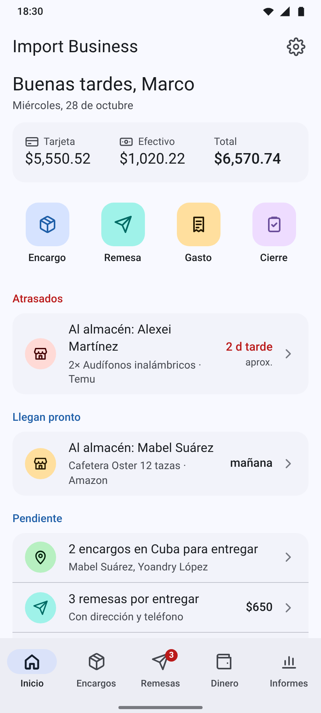
AndroidInicio
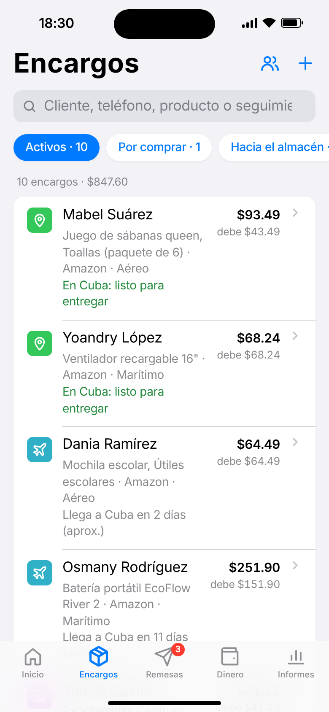
iPhoneEncargos
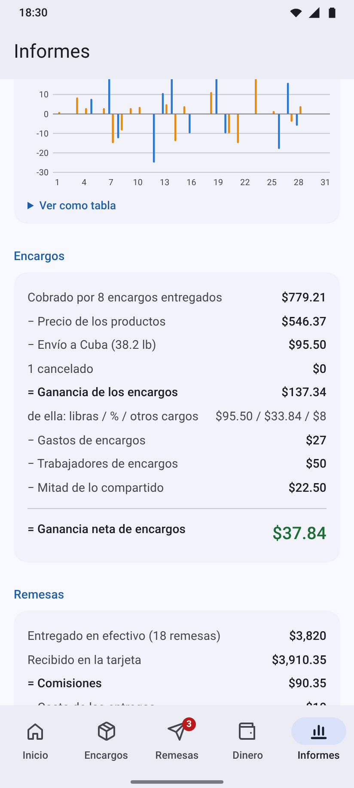
AndroidInformes
Versión 1.0 · Dirección de la app: https://marcoh03.github.io/Import_business_app/ Las capturas usan datos inventados.
Contenido
Qué hace la app
Instalarla en Android y en iPhone
Primer uso
La pantalla de Inicio
Encargos: anotar uno nuevo
Cómo se calcula el precio
Seguir un encargo hasta entregarlo
Clientes
Remesas
Dinero: tarjeta, efectivo, gastos y trabajadores
Informes y ganancia de cada negocio
Cierre del día
Avisos de llegada
Sincronizar los teléfonos (beta)
Copias de seguridad
Ajustes
Preguntas frecuentes
1Qué hace la app
Parte
Para qué sirve
Encargos
Quién pidió qué (nombre y teléfono), qué se compró, en qué tienda, cuánto costó, cuánto pesa y por dónde va: comprado → almacén → enviado a Cuba → en Cuba → entregado. Calcula el precio, la ganancia, lo que falta por cobrar y los días que tarda cada tramo.
Remesas
Alguien transfiere a la tarjeta de EE. UU. con un % por encima y aquí se entrega el efectivo. Guarda la dirección y el teléfono de quien recibe y, al entregar, pasa el dinero del efectivo a la tarjeta.
Dinero
Saldo de la tarjeta EE. UU. y del efectivo en Cuba, calculado con todo lo anotado. Gastos del negocio y pagos a trabajadores.
Informes
Ganancia neta de encargos y de remesas por separado y juntas, dinero que entró en cada cuenta y tiempos de llegada por tienda.
Cierre del día
Ganancia del día, dinero que entró, efectivo esperado contra el contado y todo lo que está por llegar o por entregar. Se comparte por WhatsApp.
SincronizarBETA
Opcional: junta los cambios de los teléfonos del equipo para que todos vean el mismo dinero y los mismos pendientes.
El diseño se adapta al teléfonoEn Android la app tiene el estilo de Android (Material) y en iPhone el estilo de iOS: botones, menús, avisos y gestos como los de cada sistema. Todo funciona igual en los dos. En este manual verás cada pantalla en las dos versiones.
Los datos están en el teléfonoTodo se guarda en el propio teléfono y la app funciona sin internet. GitHub solo aloja la app. Si activan la sincronización, se guarda además una copia cifrada compartida (capítulo 14).
2Instalarla en el teléfono
Android (Chrome)
Abre https://marcoh03.github.io/Import_business_app/ en Google Chrome.
Toca Instalar aplicación si aparece abajo, o el menú ⋮ → Instalar aplicación / Añadir a pantalla de inicio.
Ábrela siempre desde el icono. Desde entonces funciona sin internet.
iPhone (Safari)
Abre la misma dirección en Safari (en otros navegadores del iPhone no se puede instalar).
Toca el botón Compartir (el cuadrado con la flecha hacia arriba) → Añadir a pantalla de inicio → Añadir.
Ábrela siempre desde el icono.
Si la abres en el navegador sin instalar, Inicio muestra el aviso Instala la app; también está en Ajustes → Instalar en el teléfono, que explica los pasos de tu teléfono.
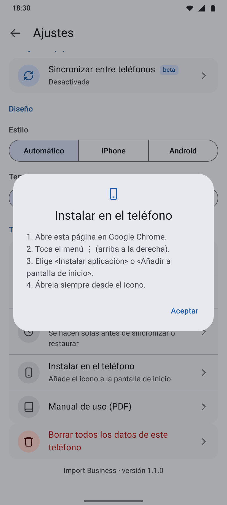
AndroidPasos para instalar
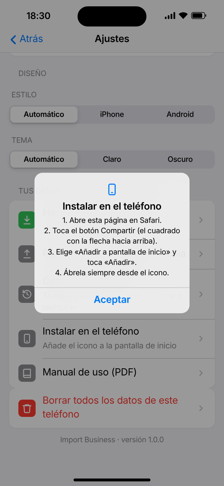
iPhonePasos para instalar
ActualizacionesCuando se publica una versión nueva, la app muestra «Hay una nueva versión. Toca para actualizar». Tus datos se conservan.
3Primer uso
La primera vez la app pide:
Tu nombre: aparece en lo que anotas, para saber quién hizo cada cambio.
Cobro por libra (lo que paga el cliente) y lo que nos cuesta la libra (lo que cobra la agencia por llevarla a Cuba).
Comisión de las remesas por defecto (por ejemplo 1%).
El dinero que hay ahora en la tarjeta y en efectivo, para que los saldos empiecen bien.
Toca Empezar. Todo se puede cambiar después en Ajustes.
¿Ya lo usan en otro teléfono?Toca Ya lo usamos en otro teléfono: unirme y pega el código del grupo (capítulo 14). Así te bajas los datos del equipo.
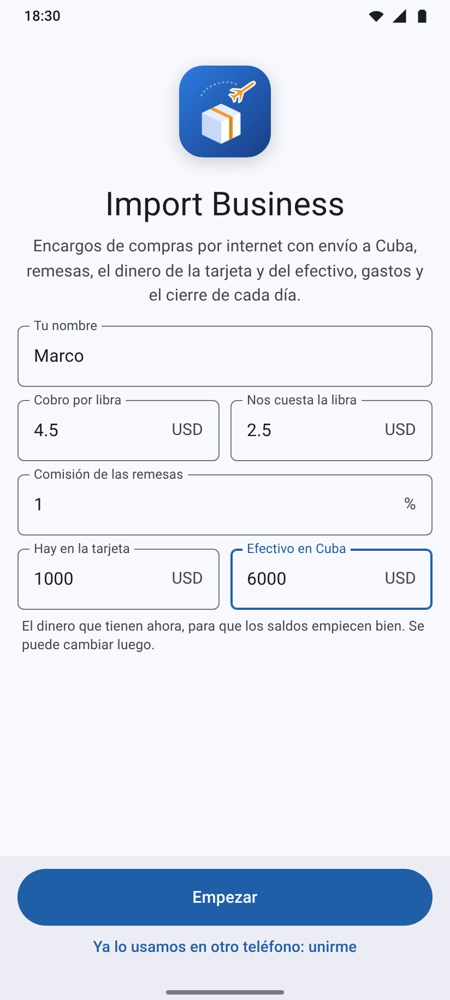
AndroidBienvenida
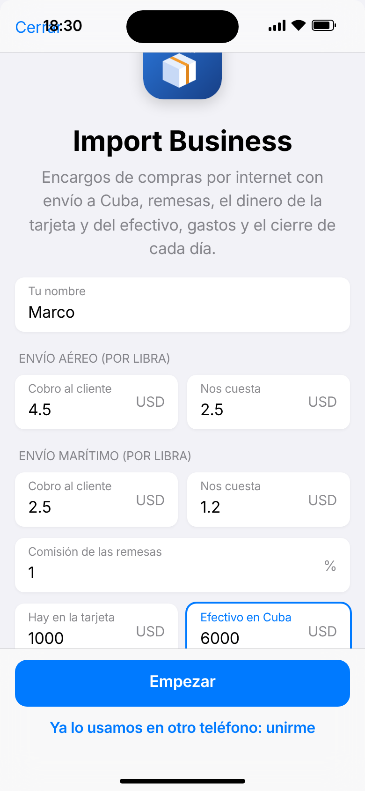
iPhoneBienvenida
4La pantalla de Inicio
De arriba abajo:
Tarjeta, Efectivo y Total: el dinero que hay ahora. Toca para ir a Dinero.
Accesos rápidos: nuevo Encargo, nueva Remesa, Gasto y Cierre.
Atrasados (en rojo): encargos que ya debían haber llegado al almacén o a Cuba.
Llegan pronto: lo que llega en los próximos días (2 por defecto; se cambia en Ajustes).
Pendiente: encargos en Cuba para entregar, remesas por entregar (avisa si el efectivo no alcanza), encargos en el almacén sin enviar y lo que deben los clientes.
Hoy: ganancia neta y dinero que entró hoy.
El botón del cierre del día y el resumen de este mes por negocio.
Abajo están las 5 pestañas: Inicio, Encargos, Remesas, Dinero e Informes. La de Remesas muestra en rojo cuántas faltan por entregar. El engranaje de arriba abre los Ajustes.
AndroidInicio
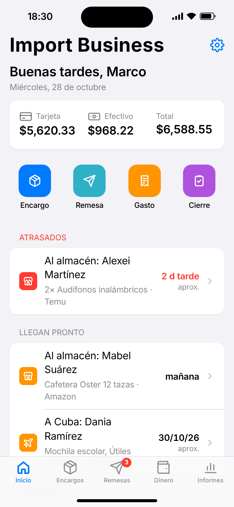
iPhoneInicio
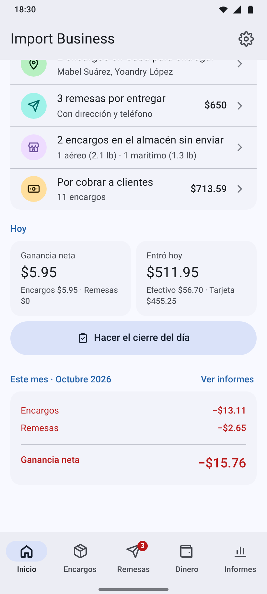
AndroidPendiente, hoy y el mes
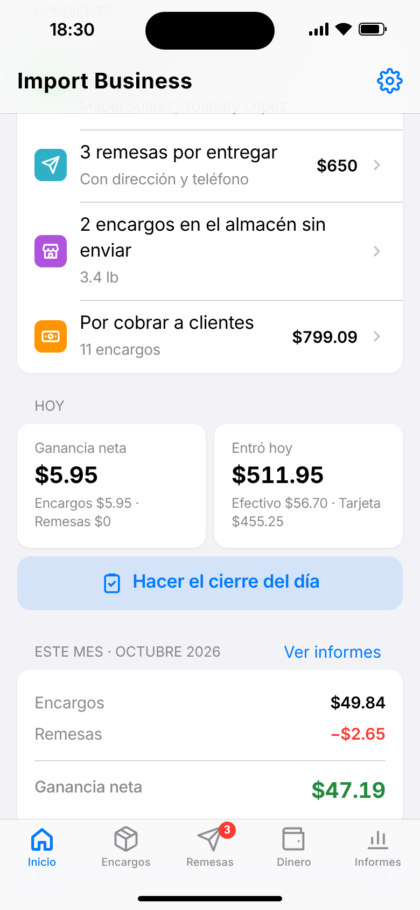
iPhonePendiente, hoy y el mes
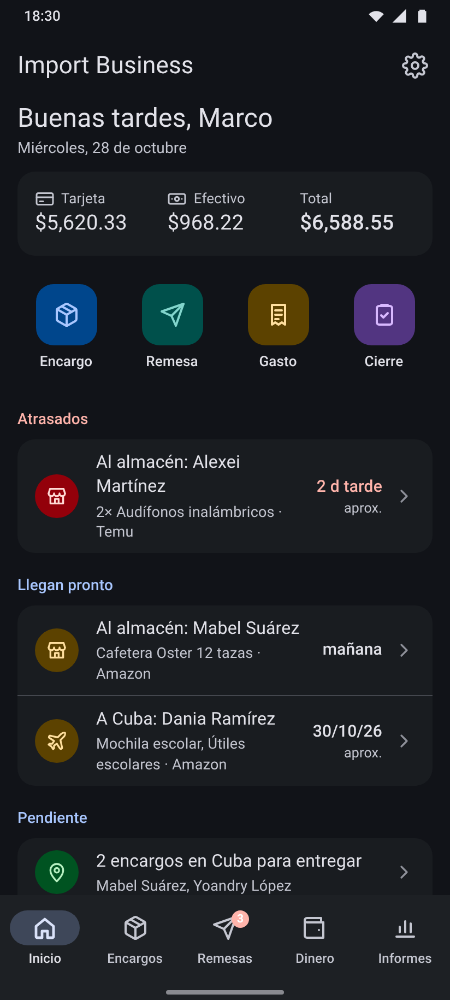
AndroidModo oscuro
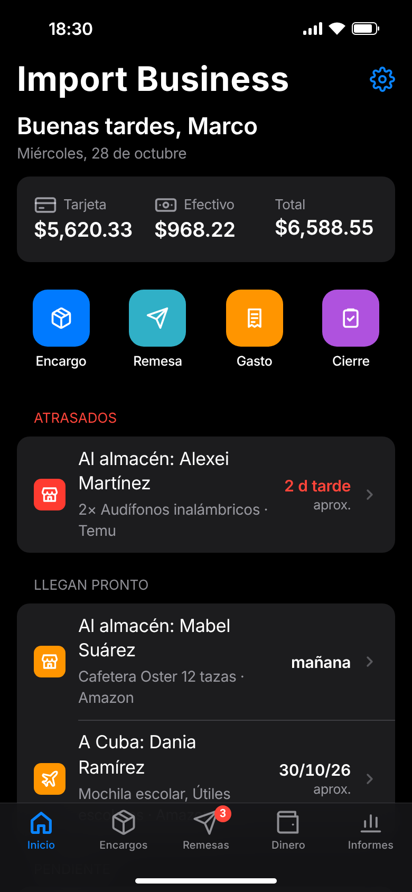
iPhoneModo oscuro
5Encargos: anotar uno nuevo
En la pestaña Encargos está la lista con filtros: Activos, Por comprar, Hacia el almacén, En el almacén, Hacia Cuba, En Cuba, Deben dinero, Entregados, Cancelados y Todos. El buscador encuentra por nombre, teléfono, producto, nº de pedido o de seguimiento.
Cada encargo muestra el cliente, lo que es, la tienda, cuándo llega y lo que debe.
Para uno nuevo toca + Nuevo encargo (abajo a la derecha en Android) o + (arriba a la derecha en iPhone).
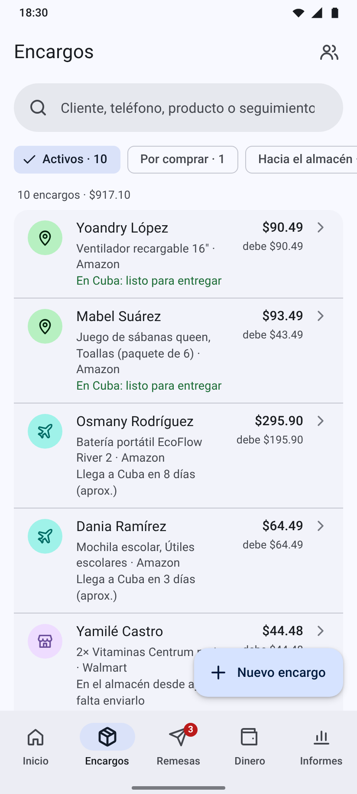
AndroidLista de encargosiPhoneLista de encargos
Rellenar el encargo
Cliente: nombre y/o teléfono. Elegir uno anterior rellena los datos de un cliente que ya pidió algo.
Productos: qué es, el precio que pagaste en la tienda (con impuestos y envío hasta el almacén), la cantidad y, si quieres, el enlace. + Otro producto añade más.
Tienda y seguimiento: Amazon, SHEIN, Temu… el nº de pedido y el nº de seguimiento. La app reconoce si es de UPS, USPS, FedEx, DHL o Amazon.
Estado: normalmente Comprado (o Por comprar si aún no lo compraste) y la fecha de compra.
Llegada prevista al almacén: escribe la que da la tienda o toca Pegar la fecha que da la tienda (copia antes el texto «Arriving Tuesday, October 14», «Llega el 14 de oct.»…). Si la dejas vacía, la app la calcula con lo que suele tardar esa tienda.
Peso y precio: el peso (aproximado al principio; el real se pone cuando llega al almacén) y el cobro por libra.
Pagos: con qué se pagó la compra y el envío (tarjeta por defecto) y, si el cliente dejó dinero adelantado, cuánto.
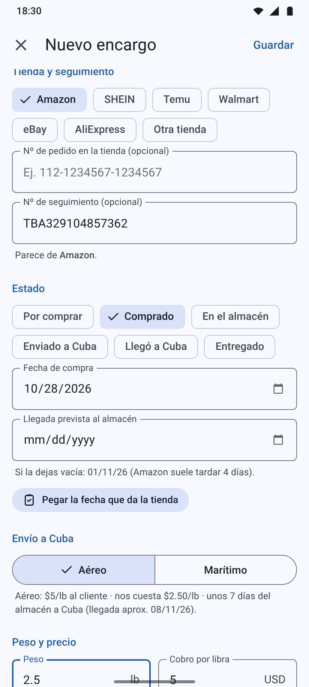
AndroidNuevo encargo
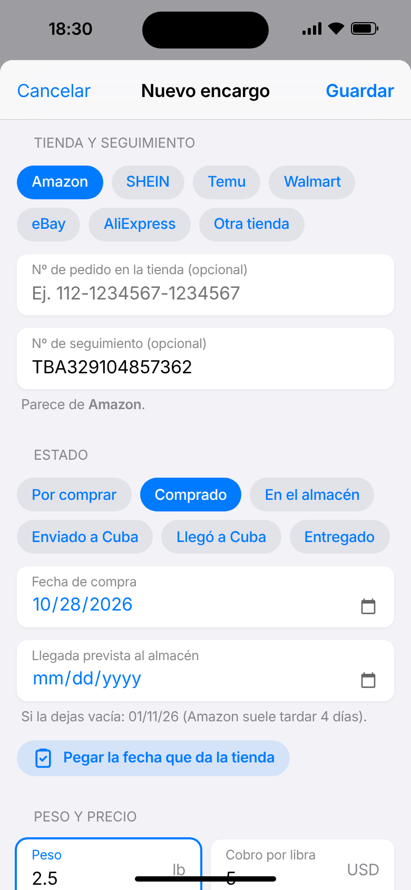
iPhoneNuevo encargo
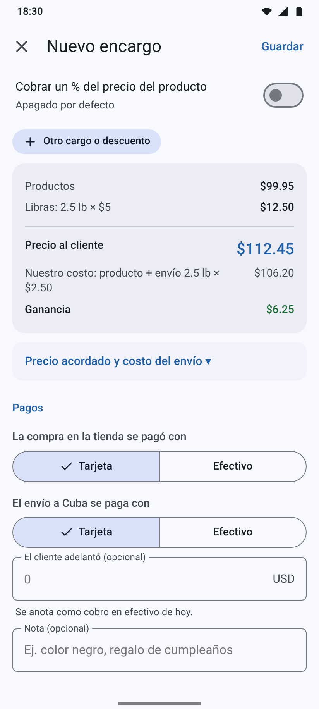
AndroidPrecio calculado
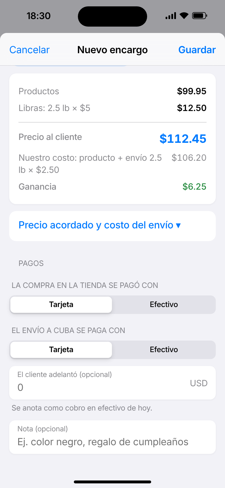
iPhonePrecio calculado
6Cómo se calcula el precio
Al cliente se le cobra el producto por lo que costó, más las libras, más (si se activa) un % del producto, más otros cargos:
Precio = productos + libras × cobro por libra + (% del producto, apagado por defecto) + otros cargos
Y la ganancia del encargo es lo cobrado menos lo que gastaron ustedes:
Ganancia = precio − productos − libras × lo que nos cuesta la libra
% del producto: interruptor Cobrar un % del precio del producto. Viene apagado; se enciende en cada encargo o, para todos los nuevos, en Ajustes. Con 10%, la bocina sumaría 9.99 USD.
Otros cargos o descuentos: + Otro cargo o descuento (mensajería a domicilio, un forro…). Un número negativo es un descuento.
Precio acordado: si le cobras un precio cerrado, escríbelo y se usa en lugar del calculado.
Costo del envío: si la agencia te cobró una cantidad exacta, escríbela; si no, se calcula con el peso.
En Ajustes se puede cobrar libras completas (2.3 lb → 3 lb) y redondear el precio hacia arriba a 0.50, 1 o 5 USD.
Cada encargo guarda sus preciosSi mañana cambias el precio de la libra, los encargos ya anotados no cambian: solo los nuevos usan el valor nuevo.
7Seguir un encargo hasta entregarlo
Toca un encargo para ver su ficha: precio, lo que debe, botones para llamar o escribir por WhatsApp al cliente y la línea de tiempo con cada paso, su fecha y los días que tardó; los pasos que faltan muestran la fecha prevista.
Rastrear abre la página de la empresa de transporte con el nº de seguimiento (o el buscador universal 17TRACK). Ver en Amazon/SHEIN… abre el pedido en la tienda.
Recordármelo en el calendario añade la llegada al calendario del teléfono con una alarma.
Toca un paso de la línea de tiempo para corregir su fecha.
El menú ⋮ permite editar, enviar al cliente un resumen con el estado y el precio, hacer otro encargo para el mismo cliente, cancelar o eliminar.
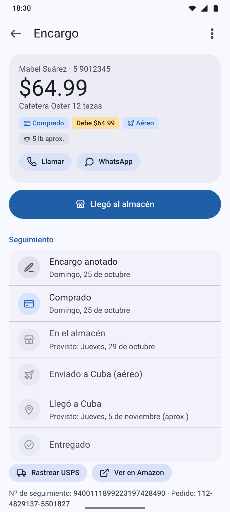
AndroidFicha del encargo
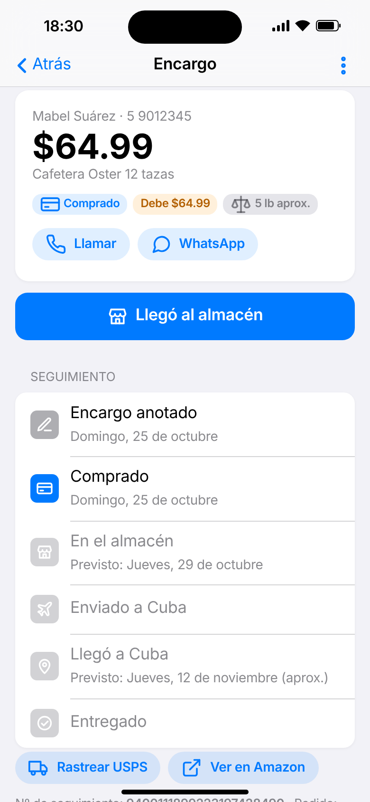
iPhoneFicha del encargo
El botón grande: el siguiente paso
Botón
Qué pide y qué hace
Ya lo compré
Para encargos «por comprar». Desde ese día el precio del producto sale de la tarjeta.
Llegó al almacén
La fecha y el peso real que da el almacén: el precio se recalcula. Muestra los días que tardó desde la compra.
Enviado a Cuba
La fecha de envío y, si la sabes, la llegada prevista. Se descuenta el costo del envío (libras × lo que cuesta la libra).
Llegó a Cuba
La fecha. Queda en «En Cuba: listo para entregar».
Entregado al cliente
La fecha y cuánto cobras ahora (por defecto, lo que falta) y dónde entra: efectivo o tarjeta. Pon 0 si te paga después.
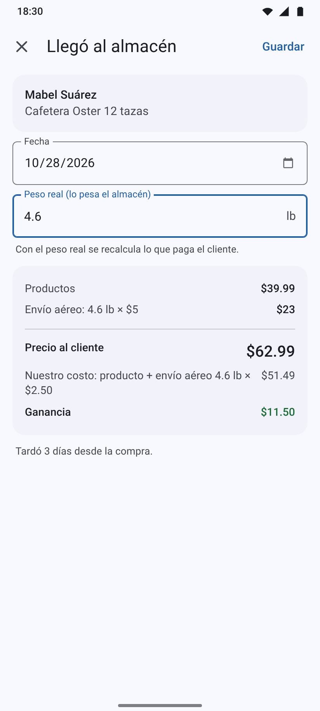
AndroidLlegó al almacén: peso real
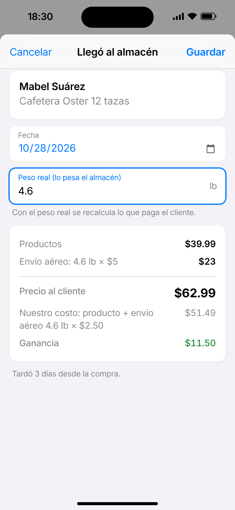
iPhoneLlegó al almacén
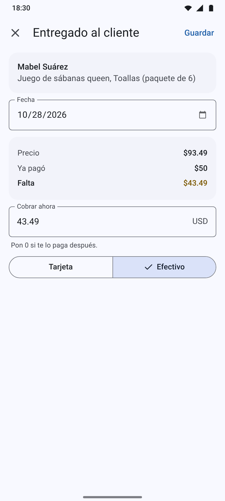
AndroidEntregar y cobrar
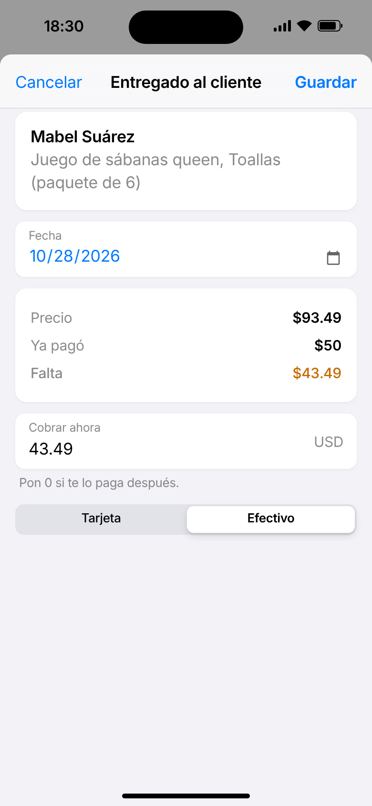
iPhoneEntregar y cobrar
Enviar varios a Cuba a la vez
Cuando mandas una caja con varios encargos, en Encargos elige el filtro En el almacén y toca Enviar a Cuba. Marca los que van, pon la fecha y toca Enviar. La app muestra el peso total y el costo del envío.
Cobros
En la ficha, Registrar cobro anota un pago (adelanto o el resto): importe, fecha y si entró en efectivo (lo normal) o en la tarjeta (si un familiar pagó desde EE. UU.). Toca un cobro para corregirlo o borrarlo. El filtro Deben dinero lista a quien le falta pagar.
Cancelar
Menú ⋮ → Cancelar encargo. Si la tienda devuelve el dinero, anótalo con Anotar devolución de la tienda: vuelve a la tarjeta.
¿Cuándo cuenta la ganancia?La ganancia de un encargo cuenta el día que se entrega. El dinero, en cambio, se mueve cuando pasa: la compra sale de la tarjeta el día de la compra, el envío el día que se envía y los cobros entran el día que se cobran.
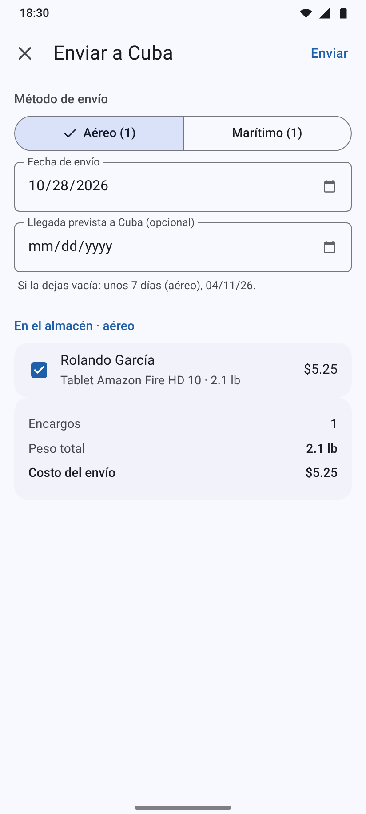
AndroidEnviar varios a Cuba
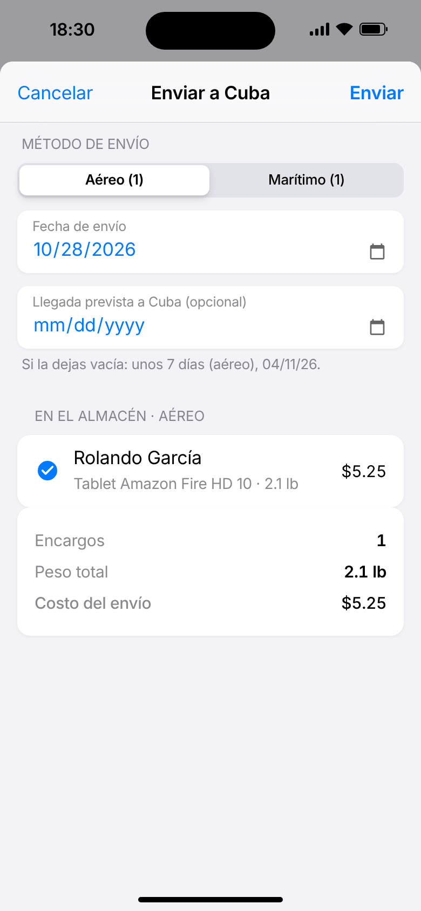
iPhoneEnviar varios a Cuba
8Clientes
En Encargos, el botón de las personas (arriba) abre la lista de clientes: se forma sola con los nombres y teléfonos de los encargos y de las remesas.
Cada cliente muestra cuántos encargos hizo, cuánto ha gastado y cuánto debe. En su ficha están sus encargos y remesas, botones para llamar o escribir por WhatsApp y Nuevo encargo para….
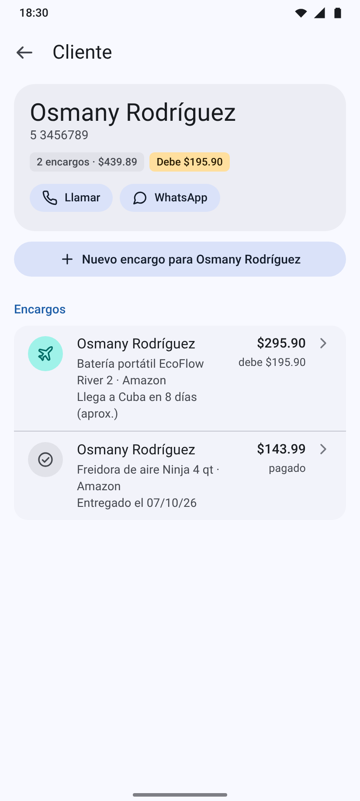
AndroidFicha del cliente
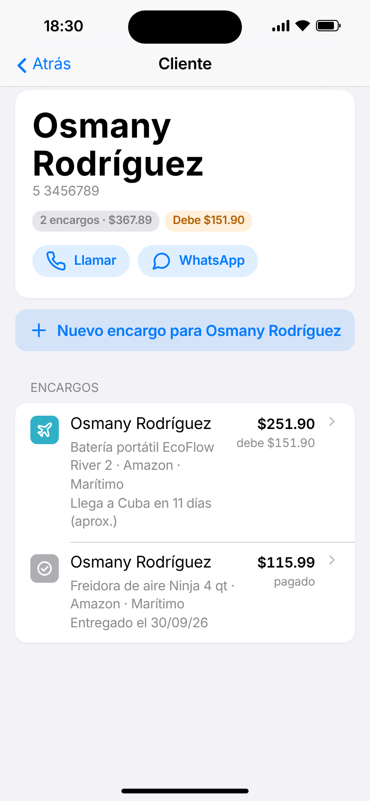
iPhoneFicha del cliente
9Remesas
Así funciona el negocio: alguien en EE. UU. quiere que entreguen, por ejemplo, 100 USD en efectivo a un familiar en Cuba. Transfiere a la tarjeta 101 USD (con 1% de comisión) y ustedes entregan los 100 aquí. Para el dinero del negocio es un cambio de efectivo a tarjeta y la comisión es la ganancia.
La pestaña Remesas muestra cuánto hay por entregar y cuánto efectivo hay (avisa si no alcanza), las comisiones del mes y la lista Pendientes / Entregadas / Todas, con dirección y teléfono.
El botón Compartir de arriba manda la lista de entregas pendientes (dirección, teléfono e importe) por WhatsApp a quien vaya a repartir.
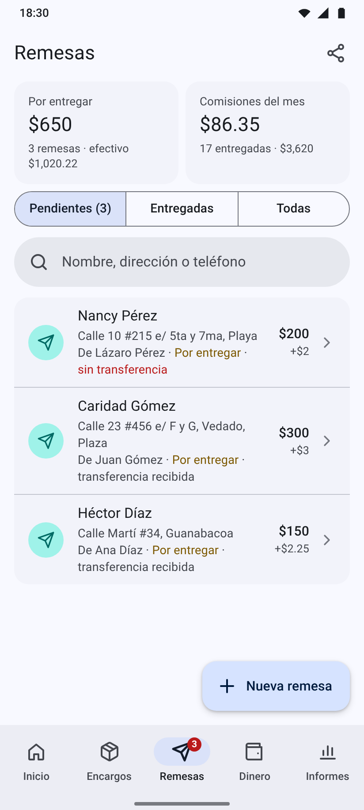
AndroidRemesas
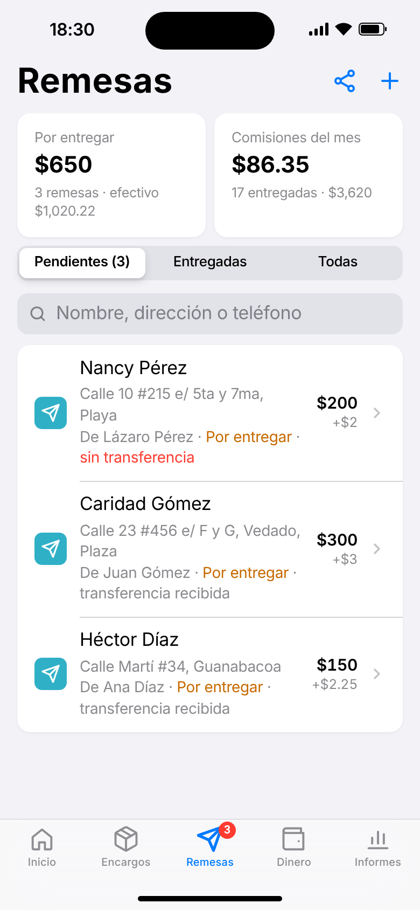
iPhoneRemesas
Anotar una remesa
Toca + Nueva remesa.
Escribe cuánto entregar y la comisión: la app calcula lo que debe llegar a la tarjeta. Si sabes lo que transfirieron, elige Sé cuánto transfirieron y calcula lo que hay que entregar. También puedes escribir la transferencia a mano si acordaron otra cantidad.
Quién recibe: nombre, teléfono y dirección (o Elegir uno anterior). Quién envía es opcional.
Ya llegó a la tarjeta: déjalo encendido si la transferencia ya está; si no, apágalo y márcalo luego con Ya llegó la transferencia.
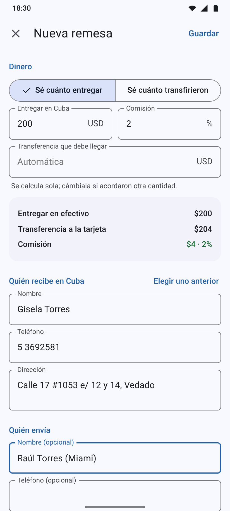
AndroidNueva remesa
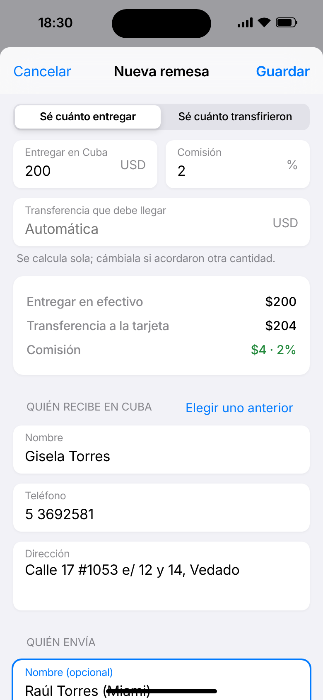
iPhoneNueva remesa
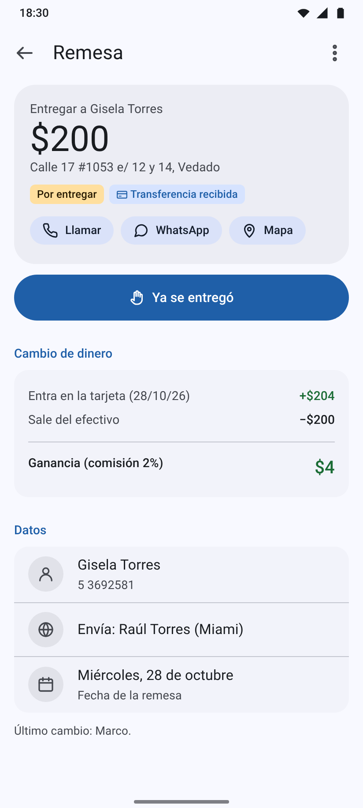
AndroidFicha: entregar
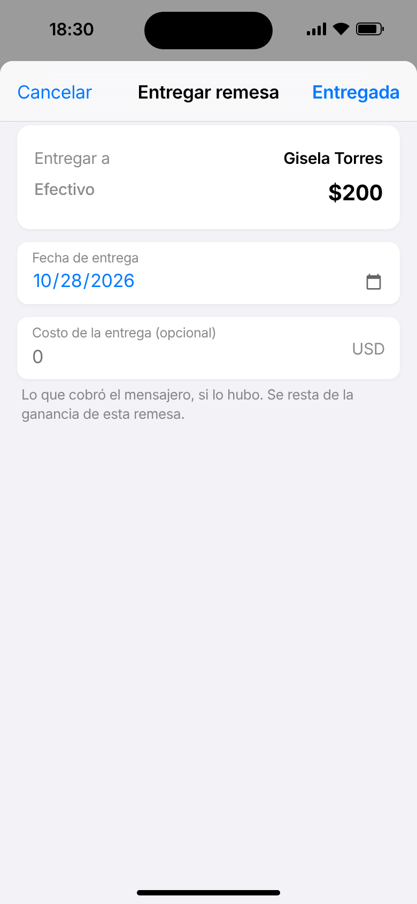
iPhoneMarcar como entregada
Entregar
En la ficha toca Ya se entregó: la fecha y, si el mensajero cobró algo, el costo de la entrega (se resta de la ganancia de esa remesa). Desde la ficha puedes llamar, abrir WhatsApp o el mapa con la dirección, y ⋮ → Enviar datos de la entrega al mensajero.
¿Cuándo cuenta la ganancia de una remesa?Cuando ya se recibió la transferencia y se entregó el efectivo. El dinero entra en la tarjeta el día que llega la transferencia y sale del efectivo el día de la entrega.
10Dinero: tarjeta, efectivo, gastos y trabajadores
La pestaña Dinero muestra el saldo de la tarjeta EE. UU. y del efectivo en Cuba y lo que falta por mover: lo que deben los clientes, las remesas por entregar, las transferencias por llegar y los envíos aún por pagar.
Debajo, tres vistas por mes: Gastos, Trabajadores y Movimientos (todo lo que entró y salió de las dos cuentas).
Toca una cuenta para ver sus movimientos y los botones:
Añadir: dinero que ponen los socios.
Retirar: reparto de ganancias u otros.
Pasar: de tarjeta a efectivo o al revés (si alguien lleva efectivo y lo deposita). Las remesas ya lo hacen solas.
Contar: escribes lo que hay de verdad y la app ajusta el saldo.
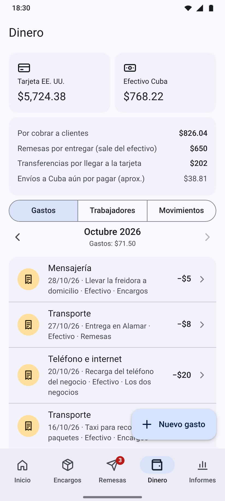
AndroidDinero
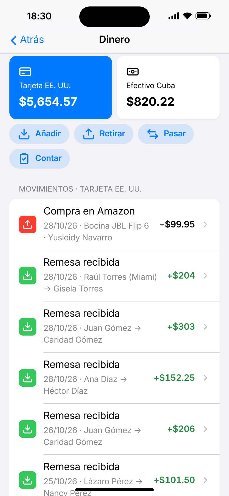
iPhoneMovimientos de la tarjeta
Gastos del negocio
+ Nuevo gasto (o «Gasto» en Inicio): categoría (recargas, transporte, embalaje, comisiones del banco…; + Nueva crea otra), importe, con qué se pagó, la fecha y de qué negocio es: Encargos, Remesas o Los dos (se reparte a medias).
Trabajadores
En Trabajadores añade a quienes trabajan para el negocio (mensajero, ayudante…). Pagar anota cada pago: a quién, cuánto, con qué cuenta, para qué negocio trabajó y un detalle («semana del 1 al 7»). Los pagos se restan de la ganancia neta del negocio elegido.
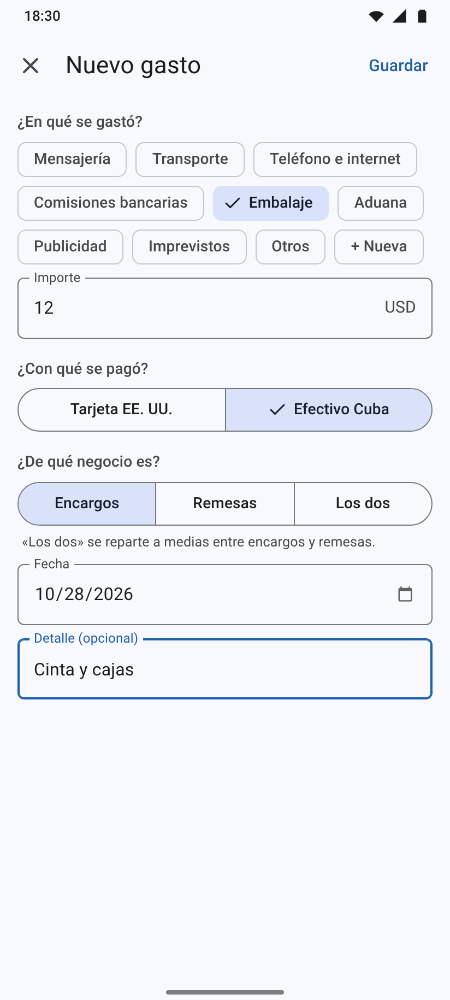
AndroidNuevo gasto
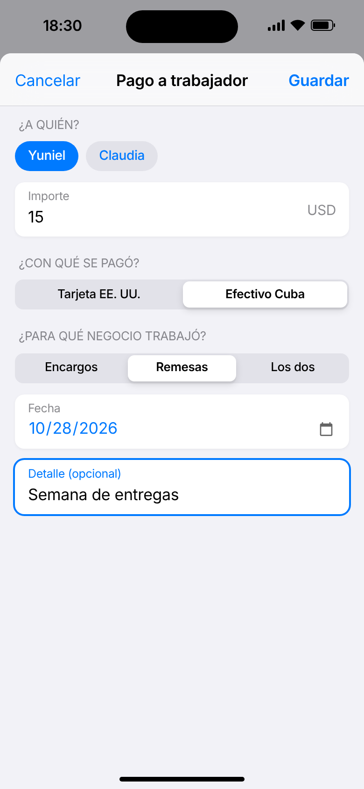
iPhonePago a un trabajador
Los saldos no se escriben: se calculanLa tarjeta y el efectivo salen de todo lo anotado (compras, envíos, cobros, remesas, gastos, pagos y movimientos). Si algo se anotó mal, corrígelo y el saldo se arregla solo.
11Informes y ganancia de cada negocio
Elige Día, Semana, Mes o Año y muévete con las flechas (o toca el título para elegir una fecha).
Ganancia neta de los dos negocios y la de Encargos y Remesas por separado.
Entró en efectivo y entró en la tarjeta.
Gráfico de la ganancia neta de cada negocio por día (o por mes en el año). Toca una columna para ver sus cifras; «Ver como tabla» muestra los números.
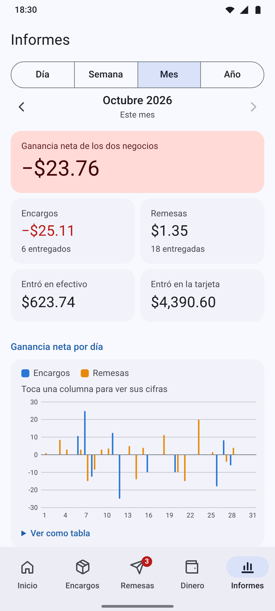
AndroidInformes
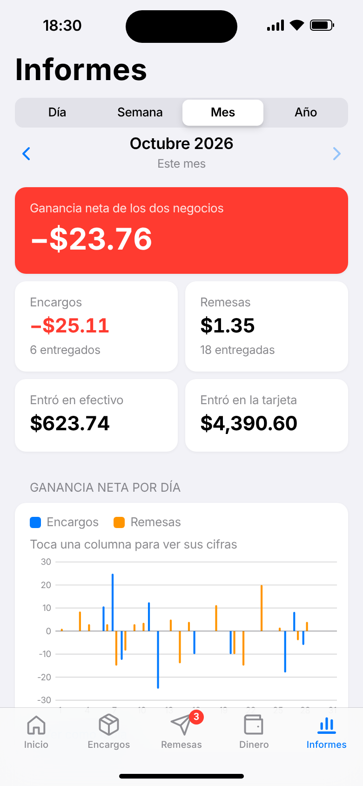
iPhoneInformes
De lo cobrado a la ganancia neta
Encargos: lo cobrado por los encargos entregados − productos − envío a Cuba = ganancia de los encargos (con cuánto vino de las libras, del % y de otros cargos); − gastos y trabajadores de encargos − la mitad de lo compartido = ganancia neta de encargos.
Remesas: entregado en efectivo, recibido en la tarjeta, comisiones − costo de las entregas − gastos y trabajadores de remesas − la mitad de lo compartido = ganancia neta de remesas.
Tiempos de llegada
Media de días de compra → almacén (y por cada tienda), almacén → Cuba, envío → Cuba y el total. Con 3 o más encargos de una tienda, la app usa estos tiempos reales para calcular las llegadas previstas.
AndroidEncargos y remesas
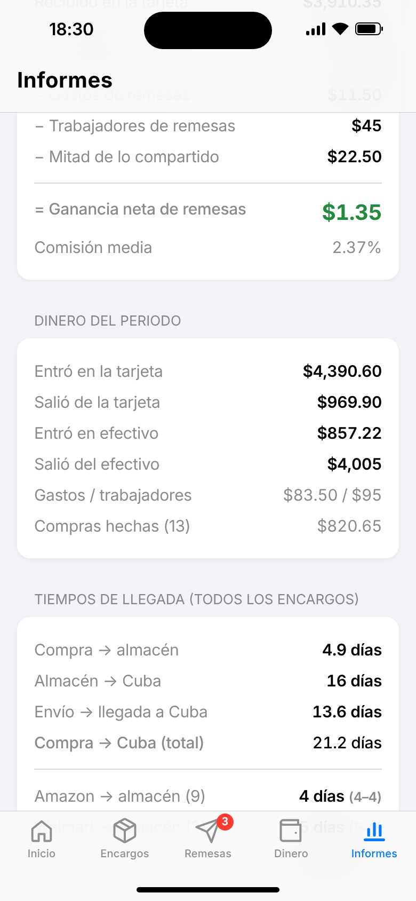
iPhoneTiempos de llegada
12Cierre del día
Al terminar el día toca Cierre en Inicio. La pantalla muestra:
Ganancia neta del día, de encargos y de remesas.
Ingresos del día: lo que entró en efectivo y en la tarjeta, gastos y pagos.
Lo que pasó hoy: compras, llegadas al almacén y a Cuba, envíos, entregas y remesas.
Efectivo en Cuba: con cuánto empezó el día, lo que entró y salió y cuánto debería haber. Si lo cuentas, escribe lo contado: verás si cuadra, sobra o falta.
El saldo de la tarjeta.
Pendiente: encargos por llegar al almacén y a Cuba (con fecha; los atrasados en rojo), en el almacén sin enviar, en Cuba por entregar, remesas por entregar y lo que deben los clientes.
Guardar cierre lo guarda (si contaste el efectivo y hay diferencia, la anota para que el saldo coincida) y Compartir lo manda por WhatsApp. Las flechas de arriba abren cierres de otros días.
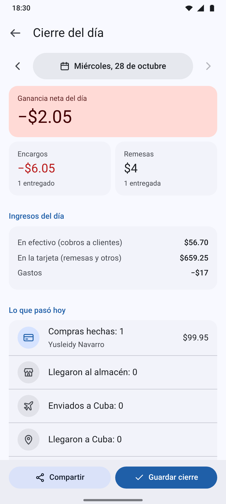
AndroidCierre del día
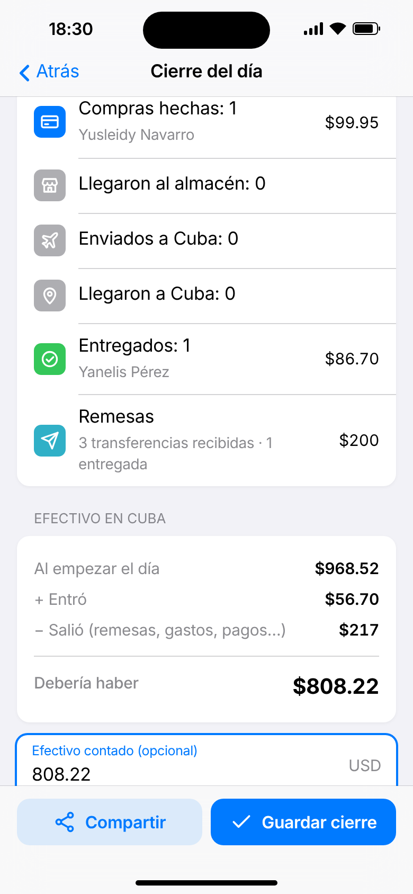
iPhoneEfectivo contado
Así queda el mensaje del cierre
Si anotas algo después de cerrarInicio avisa «Hubo cambios después del cierre». Vuelve a abrirlo y guárdalo otra vez.
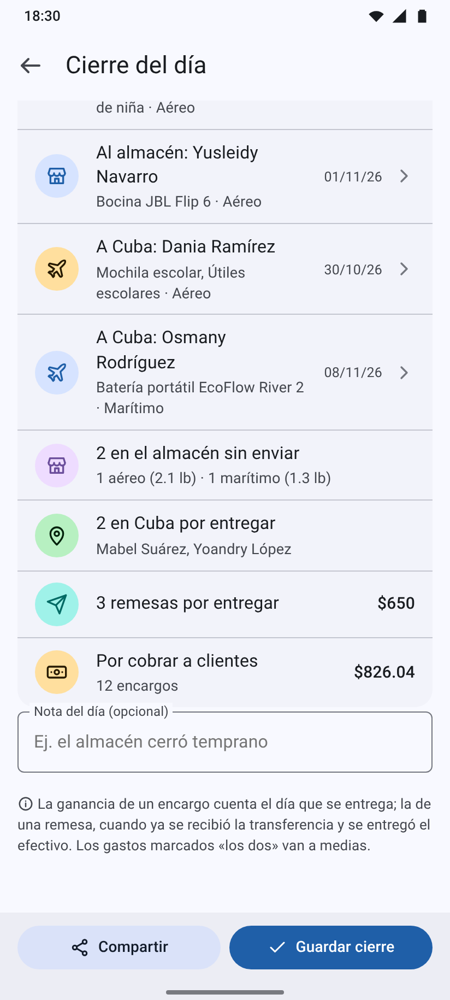
AndroidLo pendiente
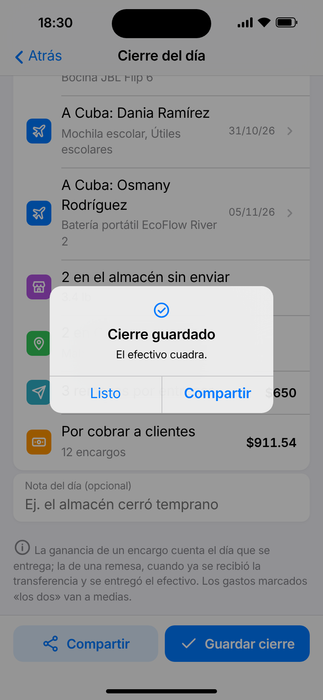
iPhoneCierre guardado
13Avisos de llegada
La app te recuerda cuándo un encargo debe llegar al almacén y a Cuba, unos días antes (2 por defecto, en Ajustes → Avisar con) y el mismo día:
En la app, siempre: en Inicio, «Llegan pronto» y «Atrasados»; en la lista de encargos, cada uno dice cuándo llega.
Avisos del teléfono: actívalos en Ajustes → Avisos en el teléfono y da permiso. En Android con la app instalada, Chrome puede mostrarlos aunque la app esté cerrada (lo decide el teléfono, normalmente una o dos veces al día); si no, salen al abrir la app. En iPhone (iOS 16.4 o más nuevo, con la app añadida a la pantalla de inicio) salen al abrir la app.
Calendario, lo más seguro en los dos teléfonos: en la ficha de un encargo toca Recordármelo en el calendario. Se abre el evento con la fecha prevista y alarmas para que lo guardes en el Calendario del iPhone o en Google Calendar.
¿De dónde sale la fecha prevista?
La que escribas tú o pegues desde la tienda (lo más exacto).
Si no, la fecha de compra + lo que suele tardar esa tienda: primero lo aprendido con tus encargos (3 o más), si no los días de Ajustes → Días que tarda cada tienda.
A Cuba: la fecha de envío + los días del almacén a Cuba (aprendidos o de Ajustes).
¿Y el rastreo automático?Amazon y SHEIN no dejan que otras apps lean sus pedidos, así que la app no puede saber sola cuándo llega un paquete. Lo que sí hace: reconoce la empresa del nº de seguimiento, abre su página de rastreo con un toque, lee la fecha si pegas el texto de la tienda y aprende cuánto tarda cada tienda de verdad.
14Sincronizar los teléfonos BETA
Es opcional y está en pruebas. Sirve para que todo el equipo vea lo mismo: cuánto dinero hay, qué se debe, qué falta por entregar. Cada teléfono sigue funcionando sin internet; al sincronizar se juntan los cambios de todos.
Cómo funciona
Cada cambio queda marcado con la hora y con quién lo hizo.
Al sincronizar, el teléfono descarga la copia compartida y, antes de traer datos nuevos, guarda una copia de seguridad de sí mismo (capítulo 15).
Junta las dos: de cada encargo, remesa o gasto se queda con la versión más reciente; lo borrado se borra en todos.
Sube el resultado para los demás.
Con Automática encendida se sincroniza al abrir la app, unos segundos después de guardar algo y cada pocos minutos. Si estás rellenando un formulario, espera a que termines. El icono de la nube arriba en Inicio muestra el estado; tócalo para sincronizar ya.
¿Dónde se guarda?En un Gist secreto de la cuenta de GitHub, cifrado con AES-256: sin el código del grupo es ilegible. GitHub guarda además todas las versiones anteriores.
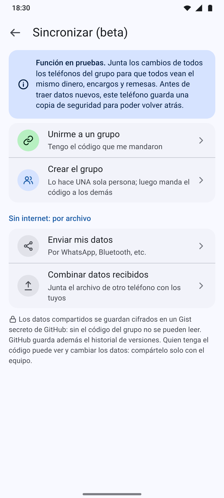
AndroidSincronizar
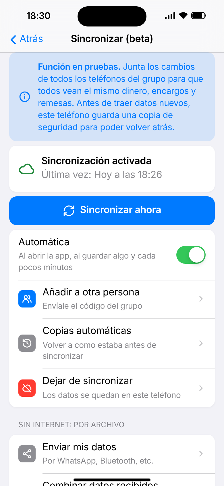
iPhoneYa sincronizando
Crear el grupo (una sola persona, una sola vez)
Ajustes → Sincronizar entre teléfonos → Crear el grupo.
Toca Abrir GitHub e inicia sesión con la cuenta del negocio.
En «Expiration» elige No expiration. La casilla gist ya viene marcada (es el único permiso que hace falta).
Toca Generate token y copia el código que empieza por ghp_.
Vuelve a la app, pégalo y toca Crear. Se suben los datos de este teléfono.
La app muestra el código del grupo (empieza por IB1-). Mándalo por WhatsApp solo a las personas del negocio.
Unirse (los demás teléfonos)
Ajustes → Sincronizar entre teléfonos → Unirme a un grupo (o en la bienvenida, Ya lo usamos en otro teléfono).
Pega el código y toca Unirme. La app dice cuántos encargos y remesas hay en el grupo.
Confirma. Si el teléfono ya tenía datos, se combinan con los del grupo (antes se guarda una copia automática).
Cuida el códigoQuien tenga el código puede ver y cambiar los datos del negocio. Si se filtra, borra el token en GitHub (Settings → Developer settings → Tokens) y creen un grupo nuevo.
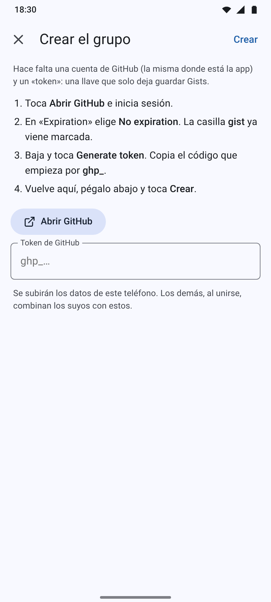
AndroidCrear el grupo
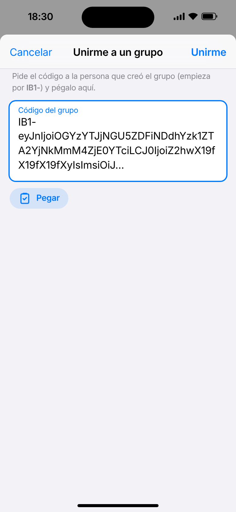
iPhoneUnirse con el código
Sin internet: por archivo
Si no hay conexión (o GitHub no abre), en la misma pantalla: Enviar mis datos manda un archivo por WhatsApp o Bluetooth, y quien lo recibe toca Combinar datos recibidos. Se juntan igual que al sincronizar, también con copia de seguridad antes.
Si GitHub no carga en CubaAlgunos servicios de EE. UU. pueden fallar sin VPN. Si la sincronización da «Sin conexión con GitHub», prueben con una VPN o usen el intercambio por archivo.
15Copias de seguridad
Copias automáticas (en el teléfono)
La app guarda sola una copia de este teléfono antes de sincronizar con cambios de otros, antes de combinar un archivo, de unirse a un grupo, de restaurar o de borrar todo. Se conservan las 10 últimas y una por día de las dos últimas semanas.
En Ajustes → Copias automáticas (o desde la pantalla de sincronizar) toca una para Restaurar (el teléfono vuelve a como estaba; antes guarda otra copia de lo actual) o Exportar como archivo. Hacer una copia ahora guarda una a mano.
Si algo sale mal al sincronizarRestaura la copia «Antes de sincronizar». Tus datos de ese momento vuelven y, en la próxima sincronización, se imponen a lo que hay en el grupo (lo que otros añadieron después no se pierde).
Copia en un archivo
Ajustes → Hacer copia de seguridad crea un archivo para guardar en Google Drive, Archivos de iCloud o WhatsApp. Hazlo cada semana (si no sincronizan, Inicio te lo recuerda). Restaurar o combinar una copia lo abre: Reemplazar deja el teléfono igual que la copia; Combinar la junta con lo que hay.
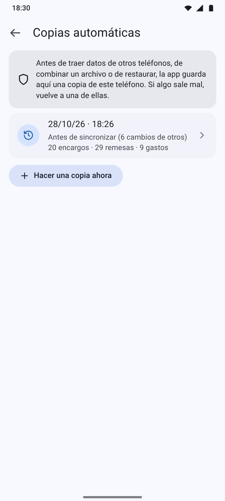
AndroidCopias automáticas
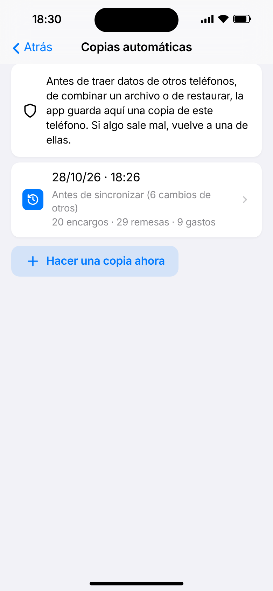
iPhoneCopias automáticas
16Ajustes
Ajuste
Para qué
Tu nombre
Firma de tus cambios (se ve en las fichas y en la sincronización).
Cobro por libra / Nos cuesta la libra
Precio de las libras al cliente y su costo real.
Cobrar libras completas
Redondea el peso hacia arriba.
Sumar un % del producto
Apagado por defecto; el % que se usa al encenderlo.
Redondear el precio final
A 0.50, 1 o 5 USD hacia arriba.
Compras y envío se pagan con
Tarjeta o efectivo (se puede cambiar en cada encargo).
Comisión por defecto
De las remesas nuevas.
Del almacén a Cuba / Avisar con
Días que tarda el envío y antelación de los avisos.
Días por tienda, Tiendas, Categorías de gastos
Listas que se usan en los formularios.
Avisos en el teléfono
Capítulo 13.
Sincronizar BETA
Capítulo 14.
Estilo y Tema
Automático (según el teléfono), iPhone o Android; claro u oscuro.
Los cambios de precios solo afectan a los encargos nuevos. Con la sincronización activa, los ajustes del negocio se comparten con el grupo (tu nombre, el estilo y el tema son de cada teléfono).
AndroidAjustesiPhoneDiseño y datos
17Preguntas frecuentes
¿Necesito internet?
No. Solo para instalarla la primera vez, para las actualizaciones y para sincronizar. Rastrear un paquete o abrir el mapa también usan internet.
El saldo del efectivo no coincide con lo que tengo.
Revisa en Dinero → Movimientos si falta algo por anotar (un gasto, una entrega, un cobro). Si no aparece, usa Contar o anota lo contado en el cierre del día: la diferencia queda registrada.
Un cliente pagó una parte por adelantado.
Escríbelo en «El cliente adelantó» al crear el encargo, o en la ficha con Registrar cobro. Al entregar, la app propone cobrar solo lo que falta.
Compré varias cosas de distintos clientes en un mismo pedido de Amazon.
Haz un encargo por cliente con el mismo nº de pedido y de seguimiento. En el almacén podrás enviarlos juntos con «Enviar a Cuba».
¿Por qué un encargo dice «(aprox.)»?
Porque la fecha prevista es calculada (o el peso no es el real todavía). Escribe la fecha que da la tienda o el peso del almacén y desaparece.
Un gasto es de los dos negocios.
Elige «Los dos»: se resta a medias de encargos y de remesas.
Dos personas cambiaron lo mismo a la vez.
Al sincronizar gana el cambio más reciente de cada registro. Si algo no quedó bien, cada teléfono tiene copias automáticas de antes de sincronizar.
Cambié de teléfono.
Con sincronización: instala la app y únete al grupo con el código. Sin ella: haz una copia en archivo en el teléfono viejo y restáurala en el nuevo.
¿Se ve en iPhone igual que en Android?
Hace lo mismo con el diseño de cada sistema. Si prefieres el otro, cámbialo en Ajustes → Estilo.